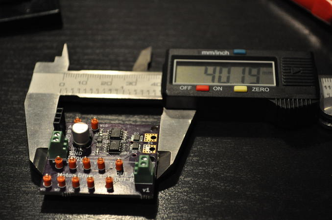

A Small Motor Driver
A while ago, I made an H-bridge logic reduction circuit that was quite cool. In fact it was so cool, I decided that it needed an H-bridge as an accessory. As a result, I built a small, general-purpose motor driver.
{kind=link}

A small motor driverThis motor driver was built to drive small to medium sized motors, and it is capable of delivering up to 30 V and 8 A continuous current. The driver uses very few parts and can fit in an area of about 1.5 cm x 1.5 cm.
{kind=link}
{kind=link}
H-bridge Logic Reduction
The logic reduction circuit reduces the 4-wire H-bridge control logic to only 2 wires. The reduction also eliminates invalid states that are redundant or destructive to the H-bridge. The circuit is explained here.

MOSFET Gate Driver
The high capacitance of the MOSFET gates makes it hard to drive the MOSFETs quickly and safely from a microcontroller. I chose to use the IXYS IX4427 gate driver, which is compatible with any logic level above 2.4 V and has a 10 ns rise time on a 1000 pF load (really fast!). The gate drive is rated for operation up to 35 V, so I just powered it with the motor's power supply.
{kind=link}
Step response of input vs. gate driver's output. Measured with 100 MHz bandwidth.
Top: control input, 2 V/div
Bottom: buffered output, 5 V/div
Time: 20 ns/div
MOSFET H-Bridge
The H-Bridge is made with two ROHM QH8MA4 that each contain a pair of complementary MOSFETs. The MOSFETs are rated for 30 V and about "8 A of continuous current." The current rating of MOSFETS is sketchy, because the rating is derived from an estimated power rating under the influence of specsmanship.
Considering the thermal characteristics instead of the sketchy power rating, the MOSFET's given thermal resistance (junction to ambient) on a ceramic board is 83 °C/W. Ceramic boards, typically alumina, are pretty good heatsinks by themselves. The given ratings are probably an order of magnitude better than typical performance on an FR4 board. It is very unsafe to rely on the given power ratings if the MOSFETs are implemented on a typical FR4 board without copper pours or external heatsinks.
In my implementation, I use double-sided copper pours about 4.5 mm x 4.0 mm in size as rudimentary heatsinks. The heatsinks double as a mounts for motor wires with ring terminals.
{kind=link}
{kind=link}
Test Program
I wrote a small program in Arduino to test the motor driver from a serial terminal. The program reads in the throttle value as an ASCII integer. Sending a number from 1 to 100 corresponds to forward throttle percentage. Sending a number from -1 to -100 corresponds to reverse throttle percentage. Sending a 0 coasts the motor. Sending a number smaller than -100 (e.g. -999) brakes the motor. It's quite fun to play around with.
// Pin definitions
int F = 5;
int B = 3;
...
void set_throttle(int next)
{
if(next < -100) {
//brake
digitalWrite(F, HIGH);
digitalWrite(B, HIGH);
return;
}
if(next == 0) {
// coast
digitalWrite(F, LOW);
digitalWrite(B, LOW);
return;
}
if(next < 0) {
// backward
digitalWrite(F, LOW);
analogWrite(B, (-next * 255) / 100);
return;
}
// forward
digitalWrite(B, LOW);
analogWrite(F, (next * 255) / 100);
}
It's a nice convenience that Arduino's analogWrite() is actually just PWM with a frequency around 500 Hz or 1 kHz (the API does not guarantee the frequency across Arduino boards). In terms of AVR programming, analogWrite() enables the timer comparison output on the pin, while digitalWrite() disables the special function and returns the pin to general-purpose output mode.
{kind=link}
{kind=link}